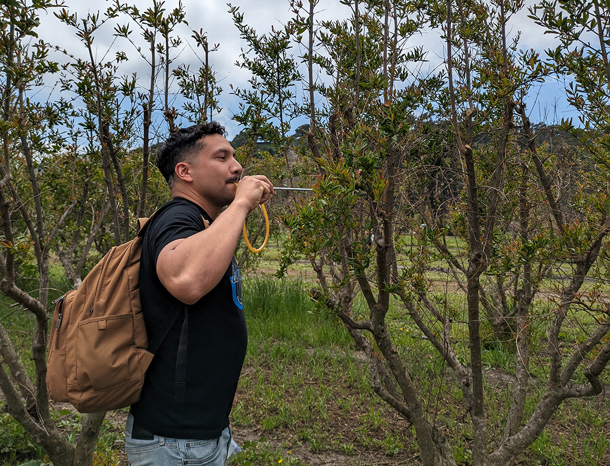
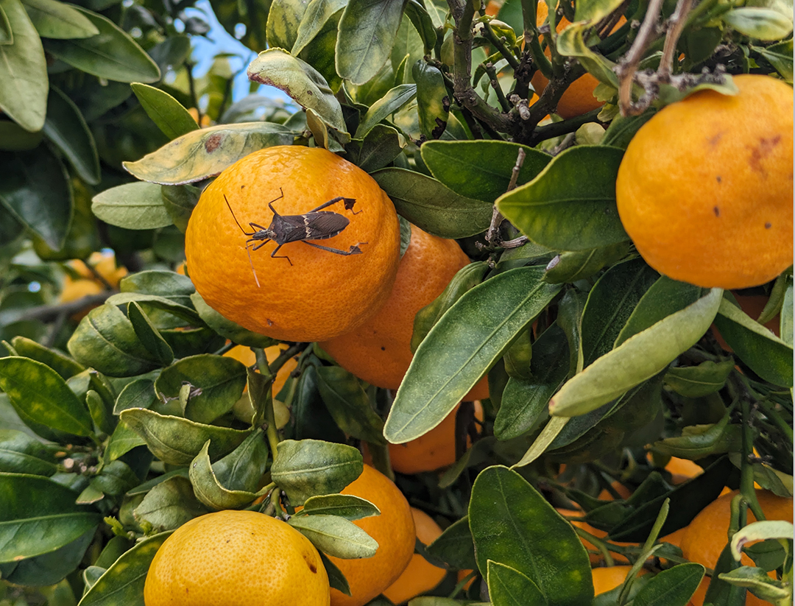
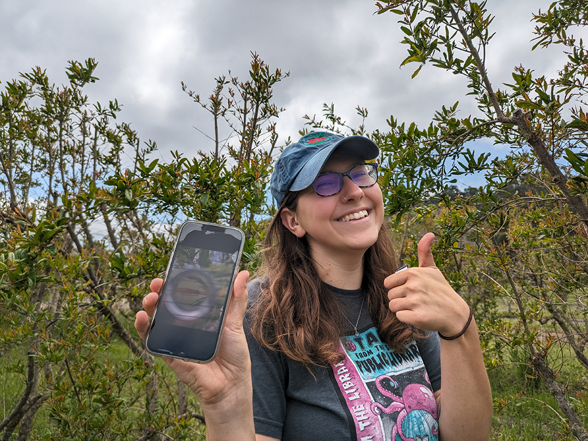
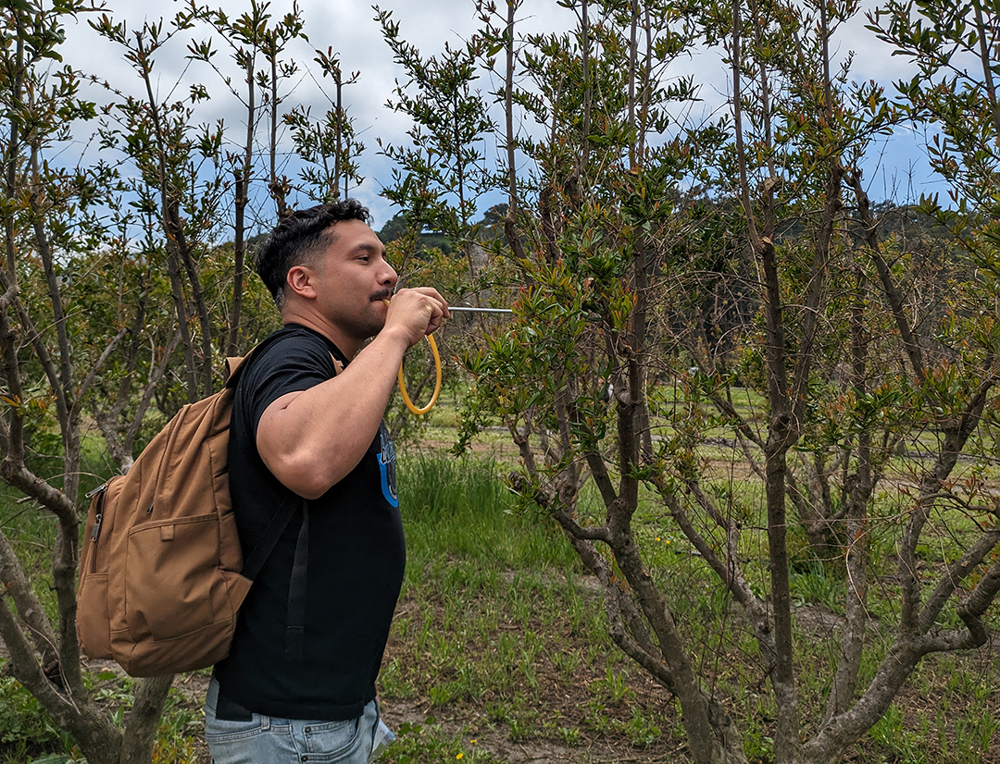
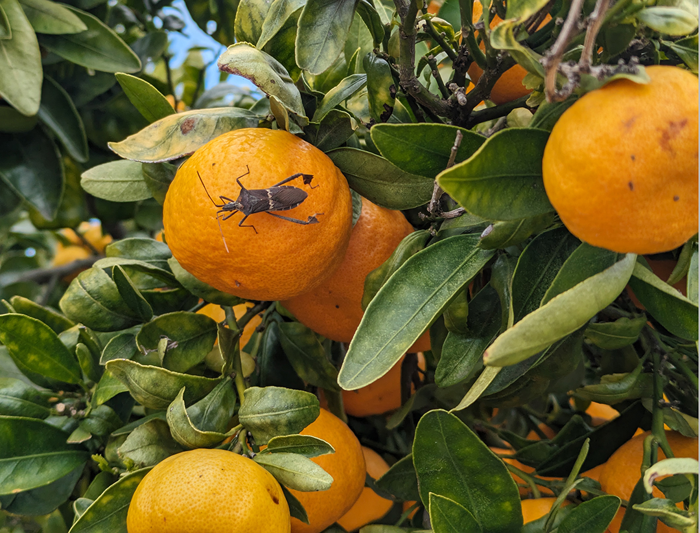
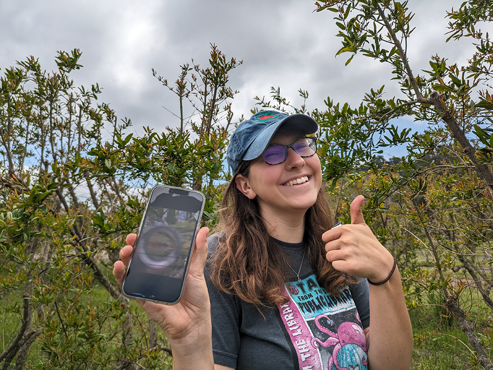

We're surrounded by bugs everywhere we go. There are over 30,000 species of bugs in California alone. Insects play an important role in our ecosystems from pollination to food sources for other species.
Continue on to explore the world of bug's around us!
Discovery Day
Discover the bugs in the Cal Poly orchards with David Headrick's Insect Pest Management class.
![1. From discovering new species to simply discovering what’s in the area, discovery is a key part of entomology. On Thursday, April 18, students of David Headrick’s Insect Pest Management class (PLSC 431) at Cal Poly went out to the orchards by the Crops Unit (Bldg. 17) to discover whatever insects they could.
“It's nice because you can actually see what's going on,” Samuel Just, a plant science senior and student in the class, said. “It’s very gratifying. You know, you get out there, you can just walk around and see what's happening in the field.”
In the coming weeks, the class will start to monitor and track certain pests to create a report about how these insects could affect the crops.
Photo Credit: Ashley Bolter, April 18, 2024, Cal Poly San Luis Obispo orchards](img/1.jpg)
![2. The students had about an hour and a half to check several rows of four different crops, documenting what bugs they found while taking note of exact location, wind conditions and temperature. While many of the students decided to go up and down each row, looking at as many trees as they could, Just had a different strategy.
Just examined the rows in a W pattern and tried to stop at random trees, going deep into the leaves to find the pests he was looking for.
“You really got to get in the canopy,” Just said. “So if your allergies are bad, it's not a good spot to be.”
Photo Credit: Ashley Bolter, April 18, 2024, Cal Poly San Luis Obispo orchards](img/2.jpg) 





![6. For students concentrating on plant protection like Ahumada, Elias and Just, Insect Pest Management is a required course. For others, the class counts for an elective.
Akemon, who is concentrating in environmental horticulture, decided to take this class in part because she likes having Headrick as a professor.
“I love Dr. Headrick,” Akemon said. “He’s really funny and very experienced.”
Headrick’s passion for his work is apparent in all that he does, from the excitement in his voice as he teaches to his openness to answer questions.
“I gotta say, I love the teaching part of it and interacting with the kids,” Headrick said.
During the lab on Thursday, Headrick helped his students identify some San Jose Scale on an apple tree.
Photo Credit: Ashley Bolter, April 18, 2024, Cal Poly San Luis Obispo orchards](img/6.jpg)
![7. San Jose Scales were found on an apple tree in their white cap stage. In this stage, the young scales, known as crawlers, became immobile and secrete hard, white, waxy coverings, according to Christelle Guédot, an entomology professor at University of Wisconsin-Madison.
San Jose Scales feed on the sap of fruit trees and can eventually kill the plant, if left uncontrolled.
San Jose Scale infestations can be controlled with natural predators and insecticides.
Photo Credit: Ashley Bolter, April 18, 2024, Cal Poly San Luis Obispo orchards](img/7.jpg)
![8. Headrick is not just making discoveries of pest infestations with his students in his labs. He has also recently discovered a new aphid species on campus.
Headrick said he stumbled upon this discovery by accident as he was looking for diversity in bug species on a Coast Live Oak (Quercus agrifolia) tree near the H2 parking lot with one of his classes.
“We wanted to show them certain kinds of ecological concepts like comparing this natural setting to an ag setting,” Headrick said.
According to Headrick, in natural settings there is generally more diversity but a lower concentration of any particular species while in agricultural settings, there is less diversity and a higher concentration of particular species.
Photo Credit: Ashley Bolter, April 16, 2024, Cal Poly San Luis Obispo near H2 parking lot](img/8.jpg)
![9. One of the things Headrick studies is galls, which are “basically little genetic engineers that change the plant tissue into a structure that they feed inside of,” he said.
As he was looking at the tree, he noticed some of the leaves were folded over, which he said is a very primitive kind of gall structure.
“So I opened it up, and when I opened it up the first time I saw aphids in there,” Headrick said. “I was like, ‘Aphids? That's not typical. That's not something you'd expect to see here on an oak tree.’ But sure enough, they were there.”
Photo Credit: Ashley Bolter, April 16, 2024, Cal Poly San Luis Obispo near H2 parking lot](img/9.jpg)
![10. In addition to the aphids, Headrick suspects there are also a new predator insect that feeds on these new aphids, though he hasn’t identified the predator flies that he has observed yet.
“We may have several new species here that nobody had ever known about, and it's all right here on this little tree,” Headrick said.
Headrick said that while the process of discovering and collecting a new species might not seem that exciting to most people, for him, it’s one of his favorite parts of his job.
“The thing about the world of entomology is that there's so much to be discovered,” Headrick said. “If you can discover something like that, that never has been seen before, like that's a thrill.”
Photo Credit: Ashley Bolter, April 16, 2024, Cal Poly San Luis Obispo near H2 parking lot](img/10.jpg)